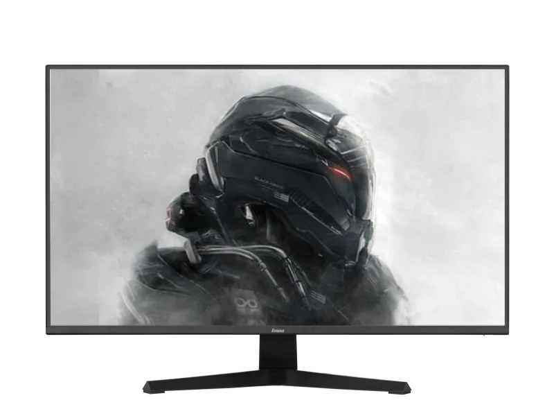

Iiyama G-Master G2741QSU-B1

Monitor Iiyama G-Master G2741QSU-B1 Black Hawk to idealny wybór dla zapalonych graczy, którzy szukają wyjątkowego doświadczenia wizualnego. Dzięki swojej matowej, 27-calowej matrycy IPS w rozdzielczości WQHD, każdy szczegół w grach staje się bardziej wyrazisty, co pozwala na pełne zanurzenie w wirtualnym świecie. Monitor została zaprojektowany z myślą o graczach, oferując wysoką częstotliwość odświeżania 144 Hz oraz niski czas reakcji 1 ms, co znacząco wpływa na płynność rozgrywki.
- Wysoka jakość obrazu
- Technologia G-SYNC
- Niski czas reakcji
Cena: 629 zł
| Nazwa parametru | Wartość | Jednostka |
|---|---|---|
| Przekątna ekranu | 27 | cale |
| Powłoka matrycy | Matowa | |
| Częstotliwość odświeżania | 144 | Hz |
| Rozdzielczość ekranu | 2560x1440 | px |